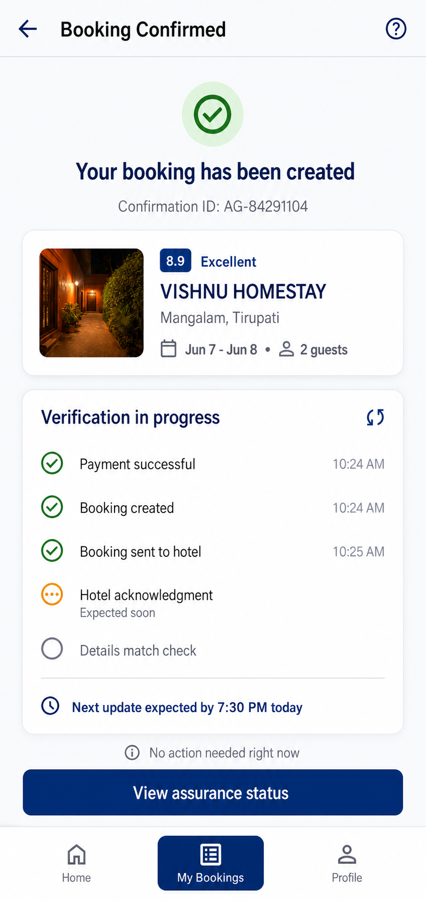
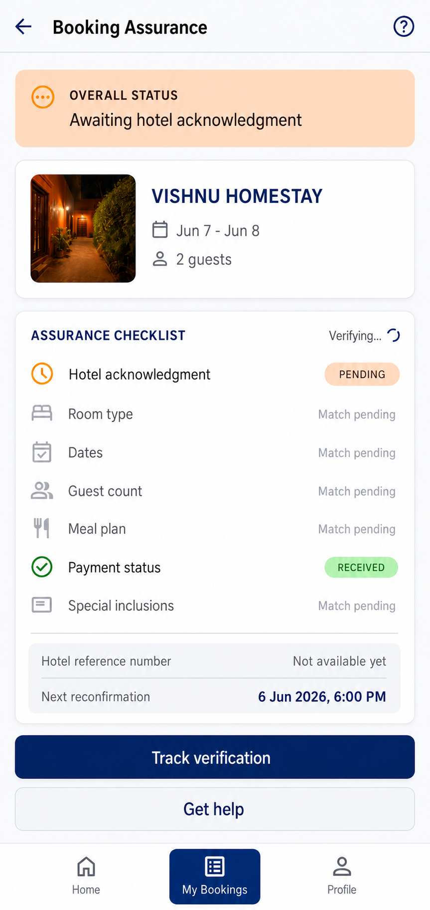
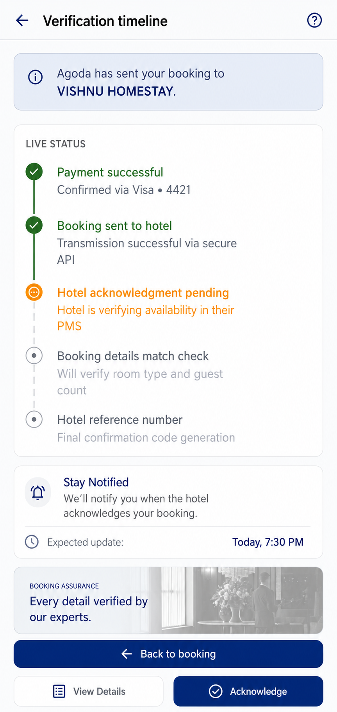
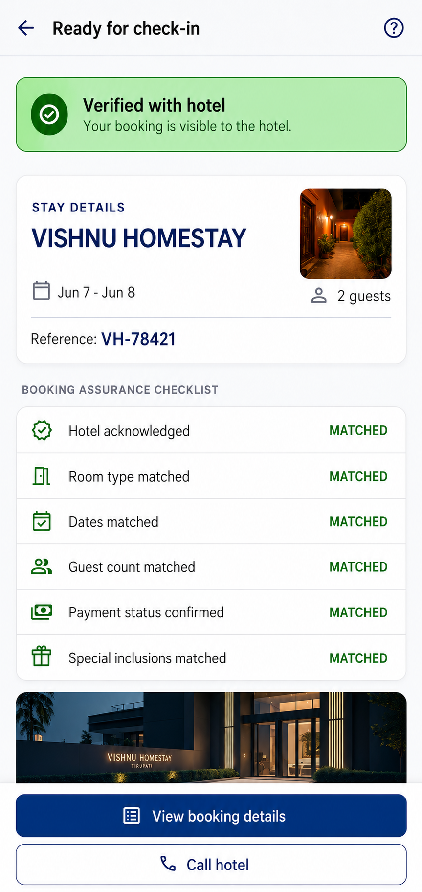
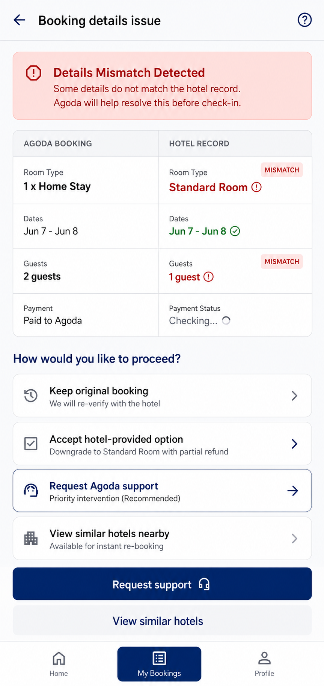
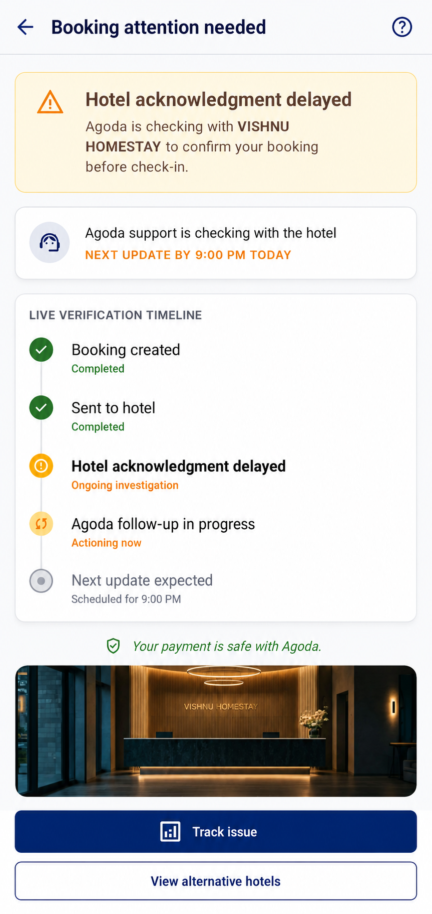

Context
Agoda operates at global scale across a fragmented hotel ecosystem. At that scale, even a small visibility gap between platform confirmation and hotel acknowledgment can affect customer confidence and support operations.
Scope & Disclaimer
This is an independent product case study.
- The problem was identified from personal booking experience and public product analysis
- All research, design framing and analysis is original and independent
- The proposed concept was not tested or validated with real users
- Concept screens were created for this case study and are not existing, implemented or tested Agoda interfaces
- Metrics and outcomes are proposed hypotheses, not actual results
- This case study is not affiliated with Agoda or Booking Holdings
Product Problem
Hotel booking is a high-trust transaction. Once users pay and receive an Agoda confirmation, they assume the hotel has the booking and that all details are correct.
But platform confirmation doesn't show whether the hotel has acknowledged the booking, whether details match hotel records, or whether a hotel reference exists. This creates a gap between what users assume and what is actually verified.
Agoda users receive platform confirmation after payment but lack visibility into hotel-side acknowledgment. This creates post-booking uncertainty and may lead users to contact Agoda support or call hotels manually for reassurance.
Users are left wondering
- Has the hotel received my booking?
- Do room type, dates, and guest count match?
- Is there a hotel reference number?
- What if the hotel record doesn't match Agoda's?
Core gap
The space between Agoda confirmation and hotel assurance.
Core Insight
Booking confirmation is not the same as booking assurance.
Users treat Agoda confirmation as final proof the stay is secured — but hotel acknowledgment, booking-detail match, and issue visibility aren't exposed, so risk is discovered only at check-in, when resolution is urgent and stressful.
My Role
Independent case study. I identified the problem from a real booking experience, mapped the current journey and friction points, designed the proposed user flow and the Booking Assurance Layer concept, prepared concept screens, wrote the product hypothesis, proposed a validation plan and defined success metrics.
This is concept and analysis work, not a shipped feature.
Proto-persona
An assumption-based proto-persona created to frame the needs of reliability-sensitive business travellers. It should be validated through user interviews and behavioural data.
Goals
- Book with confidence
- Know the hotel acknowledged the booking
- Avoid check-in surprises
- Get a hotel reference number
- Avoid repeated support or hotel calls
- Get early help if the booking is at risk
Pain points
- Platform confirmation lacks hotel-side proof
- Booking-detail match is not visible
- Uncertainty whether the room is truly secured
- Issues discovered too late to resolve calmly
- Support is reactive, not proactive
Current User Journey
Based on personal experience and public product analysis. This journey diagram does not represent Agoda's internal systems or operational processes.
This current-state journey is based on personal experience and public product analysis. It does not represent Agoda's internal systems or operational processes.
Current Friction Points
Six friction points were identified through the journey analysis. Each gap contributes to post-booking uncertainty.
Proposed Booking Assurance Layer
A post-booking verification experience showing whether the hotel has received, acknowledged, and matched the booking.
Proposed surface: booking confirmation page, Manage Booking page, trip details page, pre-check-in reminder, support flow.
Hotel Acknowledgment Status
Shows if the hotel received and acknowledged the booking: sent / awaiting / acknowledged / delayed / action needed.
Booking-Detail Match Check
Verifies room type, dates, guest count, payment status and special inclusions against hotel records.
Hotel Reference Number
Shows the hotel-side reference once it is available.
Verification Timeline
Payment → sent to hotel → awaiting → acknowledged → details matched → ready for check-in.
Risk Detected State
Alerts the user if acknowledgment is delayed or details don't match. Flags the issue before travel.
Issue Tracking
Shows what Agoda is doing, what's pending, who owns the next step, and the next update time.
Proposed User Flow
Payment completed
Agoda booking created and sent to hotel
Booking Assurance Layer activates — verification status becomes visible to the user
Hotel acknowledgment pending — expected confirmation time shown
Booking-detail match check runs — room type, dates, guests, payment verified
Hotel reference number received and displayed
Verified and ready for check-in
Exception path: if risk detected — user alerted before travel, issue tracker activated, Agoda contacts hotel, recovery options provided
Proposed Booking Assurance Experience
The following concept screens illustrate a proposed Booking Assurance Layer that begins after payment and makes hotel acknowledgment, booking-detail verification and issue resolution visible before check-in.
Concept screens — These screens were created for this independent product case study. They are not existing, implemented or tested Agoda interfaces. They do not represent the current Agoda product experience.

Booking created and verification started After payment, the user receives Agoda confirmation while clearly seeing that hotel-side verification has started.

Hotel acknowledgment and verification pending The Booking Assurance checklist separates platform confirmation from hotel acknowledgment and shows which booking details are still pending.

Verification timeline The user can see completed, active and upcoming verification stages, along with the expected time of the next update.

Verified and ready for check-in Once the hotel acknowledges the booking and the details match, the user receives a hotel reference number and a clear ready-for-check-in state.

Booking-detail mismatch detected The experience compares Agoda and hotel records, surfaces mismatched details and provides clear recovery options before check-in.

Hotel acknowledgment delayed The experience explains the delay, shows that Agoda follow-up is in progress and communicates when the user should expect the next update.
Product Hypothesis
Agoda provides a Booking Assurance Layer showing hotel acknowledgment, booking-detail match status and issue tracking
Users feel more confident after booking
Fewer anxiety-driven support contacts and fewer check-in failure complaints
Validation & Experiment Plan
To test whether the Booking Assurance Layer improves post-booking confidence, the following A/B test structure is proposed.
This validation plan is proposed for this case study. No experiment was conducted and no outcomes were measured.
Proposed Success Metrics
Constraints & Risks
Learnings
A booking product is not only search, price and payment — the post-booking experience matters just as much, because users need confidence that the service they paid for will be honoured.
Key learning: platform confirmation should evolve into booking assurance.
Designing for the gap between platform action and real-world outcome is a meaningful product problem, especially in ecosystems where the platform acts as an intermediary between users and service providers.
Expected Product Impact
The proposed Booking Assurance Layer aims to improve post-booking confidence by making hotel acknowledgment, booking-detail matches and issue resolution visible before check-in. Its actual impact would need to be validated through experiments and operational data.
This is a proposed concept, not a measured result. No outcomes were tested or confirmed.
Agoda Booking Assurance
Independent concept case study — proposed metrics only